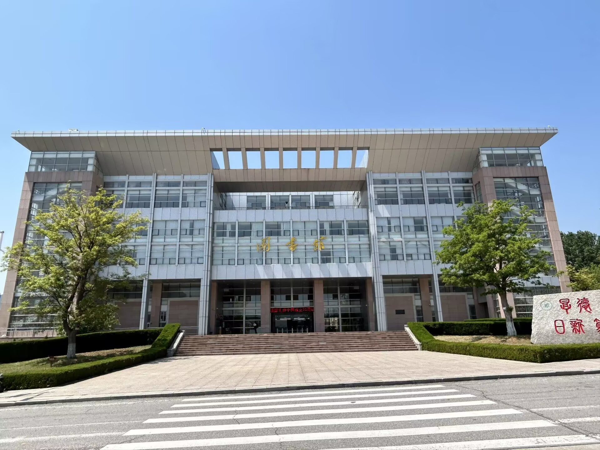
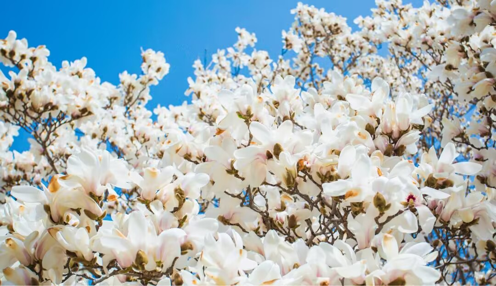
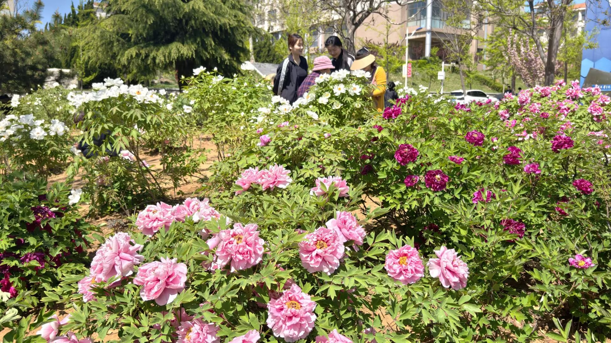
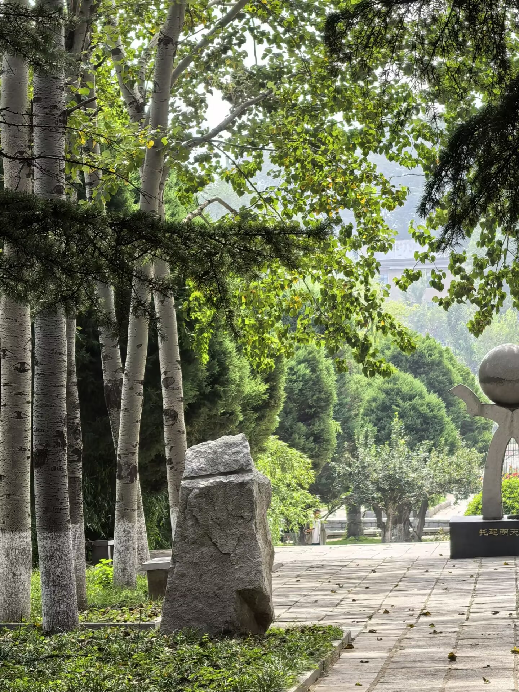
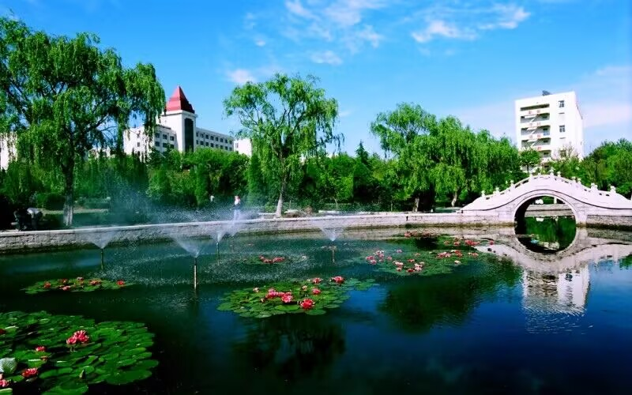
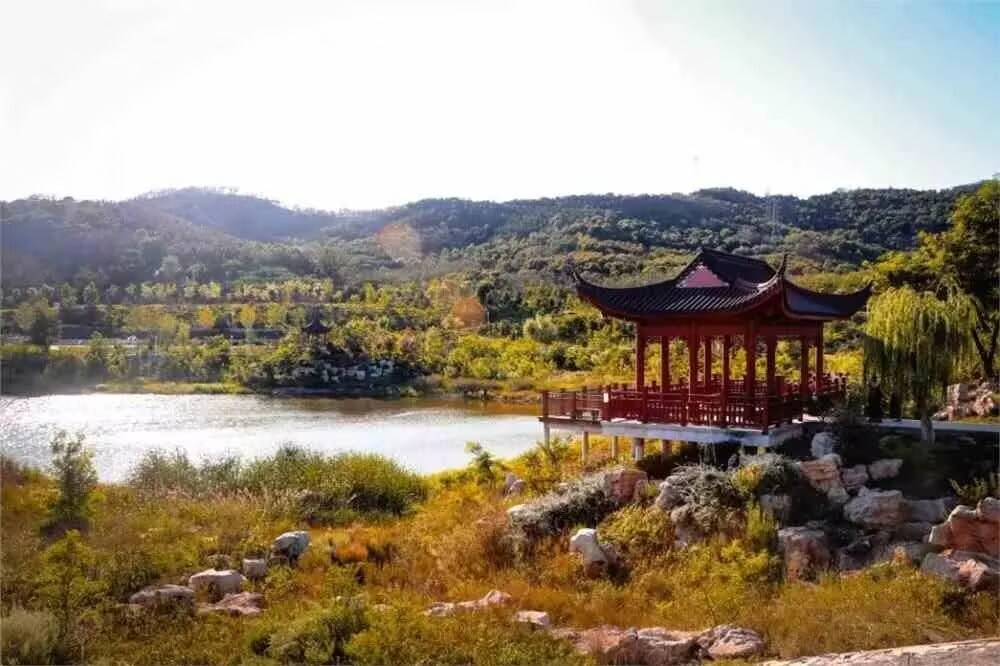

春华
烟台的春风裹着淡淡的海韵，拂过芝罘湾的波光，轻轻落在鲁东大学的校园里，便催开了满校的春华，让这座依山傍海的学府，成了一幅铺展在山海间的春日长卷。鲁大的春，从不是单一的繁花盛放，而是一步一景、移步换景的温柔诗意，每一处角落都藏着独属于春日的浪漫与静谧，百年老校的厚重底蕴，与春日的鲜活生机相融，勾勒出最动人的校园景致。
踏入鲁东大学的校门，最先邂逅的便是主干道两旁次第绽放的春花，这里的春景，带着循序渐进的温柔，层层叠叠铺满校园的每一条小径。最先苏醒的是迎春与连翘，嫩黄的花枝顺着路沿蔓延，一簇簇、一丛丛，像是给校园镶上了一道金色的花边，在料峭的春风里率先报春，宣告着冬日的沉寂彻底散去。没过几日，紫叶李与樱花便接踵盛开，粉白的花瓣缀满枝头，繁花朵朵，如云似霞，微风拂过，花瓣簌簌飘落，下起漫天的花雨，走在树下，肩头落满花瓣，脚下是浅浅的花毯，连空气里都弥漫着清甜的花香。道路两侧的常青松柏与新发嫩芽的乔木交错，深绿与浅绿、嫩黄与粉白相互映衬，古老的教学楼红墙隐在花海之后，灰瓦与繁花相映，百年建筑的沉稳与春日繁花的灵动完美交融，阳光透过花枝洒下斑驳的光影，落在青石板路上，一步一景皆是诗情，让人忍不住放慢脚步，沉醉在这温柔的春光里。
校园里的牡丹园，是鲁大春日最盛大、最惊艳的景致，每到暮春时节，这里便成了花的海洋，万千株牡丹竞相绽放，将春日的绚烂演绎到极致。这片占地万余平方米的牡丹园，栽种着近百个品种、四千余株牡丹，九大色系的花朵次第盛开，红的似火，热烈奔放；白的似雪，纯净无瑕；粉的似霞，温柔婉约；紫的似玉，雍容华贵，还有墨紫、鹅黄、浅绿等珍稀品种，各有风姿，美不胜收。层层叠叠的花瓣舒展着，花蕊轻颤，香气浓郁却不刺鼻，微风拂过，花海翻涌，香飘满园。园中的青石小径蜿蜒穿梭，凉亭、石凳错落其间，春日里，无论是清晨还是午后，都有师生漫步其中，或是驻足赏花，或是静坐写生，或是轻嗅花香，孩童与市民也慕名而来，在花海中拍照留念，欢声笑语伴着花香飘散。牡丹花开，国色天香，不仅装点了校园，更让鲁大的春日多了一份大气与雅致，这份独有的春日盛景，是自然赐予鲁大的珍宝，也成了一代代鲁大人心中最深刻的春日记忆。
除了牡丹园的绚烂，鲁大的湖光春色更是别具韵味，校园里的人工湖，在春日里褪去了冬日的清冷，漾开了温柔的碧波，成了春日里最静谧的风景线。湖面波光粼粼，倒映着岸边的垂柳与繁花，春风拂过，湖水泛起层层涟漪，花枝与柳丝在水面轻轻摇曳，像是在与湖水嬉戏。湖边的垂柳早早抽出了嫩黄的新芽，垂下万条丝绦，枝条轻拂水面，像是少女柔顺的发丝，风一吹，便轻轻摆动。湖畔种满了海棠、碧桃与丁香，粉白的海棠花团锦簇，艳红的碧桃娇艳欲滴，淡紫的丁香香气清幽，各色花朵环绕着湖水，形成了“四面繁花三面柳”的美景。湖面上偶尔有水鸟掠过，轻点水面，荡开圈圈细纹，岸边的青草破土而出，铺满了湖岸，嫩绿的草芽顶着露珠，在阳光下闪闪发亮。坐在湖边的长椅上，看湖水悠悠，赏繁花似锦，听微风轻吟，闻草木清香，所有的浮躁都被这湖光春色抚平，只余下满心的宁静与惬意，这方小小的湖水，将鲁大的春日温柔，藏得淋漓尽致。
鲁大的春华，还藏在那些静谧的林荫小道与错落的庭院之中，校园依山而建，地势错落有致，各处的小庭院、坡地小径，都被春日装点得格外雅致。山坡上的野花开得肆意，蒲公英、紫花地丁、二月兰星星点点，缀在绿草之间，随性又自然，带着山野的清新气息。教学楼与宿舍楼之间的小花园，月季、蔷薇含苞待放，嫩枝舒展，新芽冒尖，透着勃勃生机；古老的梧桐树抽出新叶，叶片从嫩黄转为浅绿，渐渐舒展成巴掌大小，树荫下的石桌石凳，被春光笼罩，成了赏春的绝佳去处。就连校园的围墙边，也爬满了新发的藤蔓，嫩绿的叶子顺着墙体蔓延，给冰冷的砖石添上了春日的温柔。登高远眺，整个鲁大校园被春色包裹，红墙灰瓦的建筑隐在繁花绿树之间，远处的青山与近处的花海相映，海风轻拂，带来山海的气息，春日的鲁大，既有山林的清幽，又有学府的雅致，每一寸土地都被春光浸润，每一处景致都散发着独有的魅力。
春华灼灼，绿意悠悠，鲁东大学的春日景色，是山海滋养的灵秀，是岁月沉淀的温婉，是自然与人文相融的绝美画卷。这里的春，没有喧嚣的浮躁，只有繁花绽放的从容、草木生长的生机，每一朵花、每一片叶、每一缕风，都在诉说着春日的美好，也见证着这座百年学府的生生不息。漫步在鲁大的春光里，赏繁花满枝，观湖光山色，感清风拂面，这份独有的春华景致，早已刻进校园的每一寸角落，成为鲁大最动人的底色，让人流连忘返，念念不忘。





